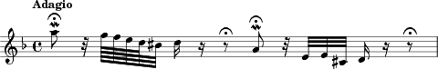

05.12.2017 | Akademie der Wissenschaften und der Literatur | Mainz
DHA Innsbruck
IncipitSearch
Ein offener Webservice zur Aggregation und Suche notierter Musik
Slides: https://digicademy.github.io/2017-DHA
Anna Neovesky & Frederic von Vlahovits |
 @digicademy |
@digicademy |
 digicademy |
CC-BY 4.0
digicademy |
CC-BY 4.0
Was ist ein Incipit?
Quelle: Toccata and Fugue in D minor, BWV 565 (Bach, Johann Sebastian) in IMSLP, aufgerufen am 16.10.17.
- Incipit meint den Anfang einer Musik
- Möglichkeit der Identifizierung von übereinstimmendem musikalischen Material
- Ggf. sogar erste musikanalytische Anhaltspunkte
IncipitSearch…
ist eine Suchmaschine für Musikanfänge
- Metasuchmaschine
- Einbezug von Repositorien durch offene Daten
IncipitSearch Metadatenformat

Schema: Torsten Schrade
{kind=link}
Perspektiven/Wünsche für die IncipitSearch
- Optimierung und Ausbau der bestehenden Funktionalität im starken Austausch mit Musikwissenschaftlerinnen und Musikwissenschaftlern
- Suchinterface
- Suchmodi
- Ergebnisaufbereitung
- Wachstum der Plattform durch weitere Datenlieferanten
- Einbeziehung weiterer Formate
- Webformular zur Erfassung eigener Incipit-Daten
- Fokus Normdaten und LOD
- Einbeziehung von Normdaten
- Bereitstellung sämtlicher aggregierter Daten
- Anreiz zur Digitalisierung von Werkverzeichnissen und der eigenen Erstellung von Metadaten